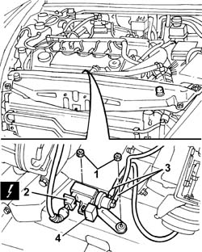

1064A28 Solenoid valve for turbocharger vanes actuator
- Path
- Procedures > 10 ENGINE > 1064 ENGINE SUPERCHARGING SYSTEM > 1064A TURBOCHARGER ASSEMBLY > 1064A28 Solenoid valve for turbocharger vanes actuator
- Kind
- repair procedure (removal / refitting; the operation number is the code)
- Applies to
- engines: 2.4 JTD 10V; all production periods
- Interactive page
- https://sloeber94.github.io/elrnDB-lThss/en/#/103026
Applies to: all engines; all production periods
 Removing
Removing
 Refitting
RefittingSee in Op. 1016A10
1. Undo the nuts fixing the actuator to the crossmember.
2. Disconnect the electrical connection for the vane actuator solenoid valve.
 | Description | Connector |
|---|---|---|
2 | Turbocharger vane solenoid valve | L036 |
3. Disconnect the flexible vacuum pipes from the solenoid valve.
4. Remove the solenoid valve for the turbocharger vanes actuator.

Applies to: all engines; all production periods
Refitting
Removing- Fit the solenoid valve for the turbocharger vanes actuator.
- Connect the flexible vacuum pipes to the solenoid valve.
- Connect the electrical connection for the vane actuator solenoid valve.
| Description | Connector |
|---|---|---|
. | Turbocharger vane solenoid valve | L036 |
- Tighten the nuts fixing the actuator to the crossmember.
See in Op. 1016A10